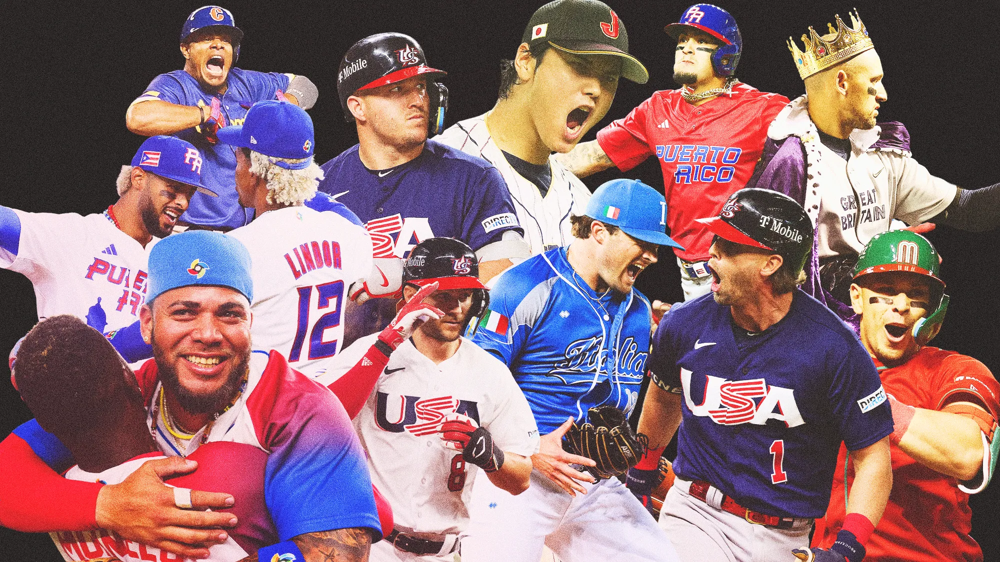

About the World Baseball Classic
The World Baseball Classic is a celebration of baseball’s global reach and a testament to the sport’s ability to unite people across cultures and continents. Since the first one in 2006, the WBC has grown into one of the most exciting and meaningful events in the baseball calendar.
Unlike the Major League Baseball season, where players compete for their respective teams, the WBC is about national pride. The tournament has given us some of the most memorable moments in recent baseball history. Who could forget the Dominican Republic’s undefeated run in 2013, led by stars like Robinson Canó and José Reyes? The WBC has also been a stage for rising stars to fuel their rise, like Shohei Ohtani’s electrifying performances for Japan and Francisco Lindor’s clutch plays for Puerto Rico. Players from countries that have their own league akin to MLB also get to reach the American and a broadly global audience, such as Nippon Professional Baseball, the KBO League, and the Cuban National Series.
One of the best aspects of the WBC is the way it brings fans together. The tournament is a vibrant celebration of culture and community. It’s a reminder that, no matter where you’re from, baseball has the power to connect us all. It’s about expanding the game’s reach, inspiring the next generation of players, and celebrating the diversity in baseball. For fans, it’s a chance to cheer for their country and to witness the incredible talent that exists beyond the borders of Major League Baseball.
The World Baseball Classic is a reminder that baseball is a universal language, spoken and loved by millions around the world.
Countries that will play in the 2026 WBC
- Brazil
- Canada
- Colombia
- Cuba
- Dominican Republic
- Mexico
- Nicaragua
- Panama
- Puerto Rico
- United States
- Venezuela
- Chinese Taipei
- Japan
- South Korea
- Czech Republic
- Great Britain
- Israel
- Italy
- Netherlands
- Australia